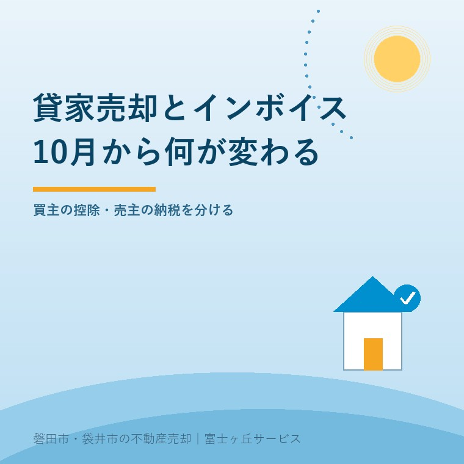
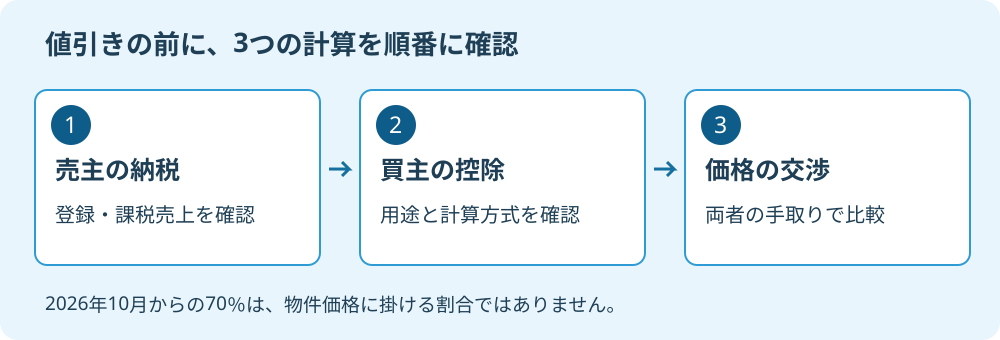

賃貸物件売却とインボイス｜10月改正の確認
2026年9月13日｜カテゴリ：費用・税・売却実務

この記事の要点
Q. 貸家の買主にインボイス登録を聞かれました。10月から値下げが必要ですか。
一律の値下げは必要ありません。2026年10月1日から、未登録事業者等からの課税仕入れの経過措置は70％になりますが、買主の控除可否と売主の納税義務は別です。住宅賃貸の控除制限も確認します。磐田市・袋井市・森町では、介護施設の運営から不動産事業を始めた富士ヶ丘サービスのような地域密着の会社に、売却条件の整理から相談できます。
親から引き継いだ貸家を売ろうとしたら、買主から「インボイス登録はありますか」と聞かれた。住宅の家賃で消費税を意識していなかった持ち主なら、急に別の商売の話を持ち込まれたように感じるはずです。
大石浩之（磐田市／不動産業）です。宅地建物取引士として私は、登録番号の有無だけで価格交渉を始めるべきではないと考えます。買主が差し引ける税額と、売主が納める税額は別の計算です。2026年9月13日に確認した国税庁の資料から、話を三つに分けます。
2026年10月から70％。物件価格の70％ではない
国税庁「令和8年度税制改正特集」によると、インボイス発行事業者以外からの課税仕入れについて、経過措置の控除可能割合は2026年10月1日から70％になります。従来の予定にあった50％をそのまま使うと、交渉の前提が違ってしまいます。
| 課税仕入れを行う期間 | 経過措置の割合 |
|---|---|
| 2026年9月30日まで | 80％ |
| 2026年10月1日〜2028年9月30日 | 70％ |
仕入税額控除とは、事業者が売上に係る消費税額から、仕入れなどに係る一定の税額を差し引く仕組みです。ここでいう70％は、経過措置の対象になる消費税相当額についての割合です。土地建物を合わせた売買価格の70％が戻る話でも、30％値下げする話でもありません。
経過措置には帳簿・請求書等の保存などの要件があります。また国税庁は、同じ未登録事業者等からの課税仕入れに金額上限を設けています。割合だけを知っていれば全件使える、という制度ではありません。実際の適用と取引日の扱いは買主側の税理士に確認します。
私は段階的な変更には、取引当事者が準備をする余地があると考えます。9月までの条件と10月以降の条件を数字で比べられる点も助かります。その上で、古い50％の説明資料を使い続けないでほしい。仲介する側にも、参照した資料の版を確かめる仕事があります。

家賃の非課税と、建物売却の課税対象は別
国税庁は、住宅の貸付けを原則非課税とする一方、住宅賃貸用や店舗賃貸用の建物を売却した場合は課税対象になると説明しています。毎月の家賃の扱いを、そのまま建物の売却代金へ当てはめることはできません。
ただし、課税対象の取引であることと、売主に納税義務があることは別です。国税庁「納税義務の免除」では、基準期間の課税売上高が1,000万円以下なら原則免除としていますが、インボイス登録や届出、特定期間などによる例外も示しています。未登録でも課税事業者である場合はあります。
相続した物件なら、親の事業と相続人の事業の資料を分けて持参します。「私は会社員だから」「親が登録していなかったから」という二言では、売却時の納税義務を決められません。相続に伴う判定を含め、税理士などの専門家に確認を。
| 分ける項目 | 確認の入口 |
|---|---|
| 土地の売却 | 土地の譲渡は非課税 |
| 賃貸用建物の売却 | 課税対象の取引。売主の納税義務は別判定 |
| インボイス登録 | 売主の申告・納税にも影響 |
| 買主の仕入税額控除 | 買主の用途、課税方式、保存書類などを確認 |
土地建物の価格の分け方にも根拠が要ります。買主の控除を増やしたいから建物分を膨らませる、という調整を私は勧めません。査定の根拠と契約書の内訳を照合し、税務上の合理性を専門家に確認します。賃貸を続ける案との比較は、実家を貸す選択肢も参考になります。
買主が住宅として貸すなら、控除制限を先に確認
賃貸物件を買えば必ず70％分の控除を使えるわけではありません。国税庁は、居住用賃貸建物の取得について仕入税額控除を制限しています。該当する建物では、インボイスの有無を確認する前に、そもそも取得時の控除が認められるかを見ます。
この制度で対象となる居住用賃貸建物は、住宅の貸付けに使わないことが明らかなもの以外で、一定の高額資産に当たる建物です。国税庁の質疑事例では、附属設備を含む税抜価格1,000万円以上が示されています。土地込みの総額だけで判定しないことも注意点です。
建物の一部が店舗なら、合理的に区分した住宅賃貸部分について制限される場合があります。さらに、買主が一般課税か簡易課税かでも計算の仕組みは違います。簡易課税は実際の仕入れごとの税額を積み上げる方式ではありません。
私なら、買主の担当者に「取得後の用途は何か」「どの課税方式で、今回の控除額をどう計算したか」を確認します。回答は会社の内部資料を全部出してもらうという意味ではありません。値引きの理由に使う範囲の計算根拠を、税理士確認済みの説明として求めます。
建物が1,000万円未満なら無条件で控除できる、と逆に読むのも避けてください。非課税の住宅家賃に対応する仕入れかなど、通常の控除計算も残ります。居住用賃貸建物の制限と、ほかの控除条件の両方について、個別判断は専門家に確認を。
値引きは10ポイント差を金額に直してから
80％から70％への変更は10ポイントの差です。売買価格の10％減ではありません。経過措置以外の控除制限がなく、その対象となる消費税相当額が50万円という仮定なら、80％は40万円、70％は35万円で、差は5万円です。
この例は割合を理解するための仮計算で、磐田の貸家相場や特定物件の税額ではありません。建物の税込対価550万円に対して、税率10％相当として550万円×10÷110＝50万円と置いています。住宅賃貸の制限等がある取引に、そのまま使うことはできません。
税の話で値引きを求めるなら、計算の中身を出してほしい。私はそう考えます。売主は税の用語に詳しくないことがあります。「控除が減るので」という言葉だけで、根拠の見えない金額を飲む必要はありません。
一方で、買主に実際の負担増があるなら、交渉材料として扱うこと自体は理解できます。私も、売主の手取りを守りたい気持ちと、買主の採算が合わなければ話が進まない現実の間で迷います。だから値引きを一律に拒むのでも、要求額をそのまま通すのでもなく、金額と条件を並べます。
たとえば5万円の差を検討するために、測量が終わらないまま決済を9月へ押し込むのは勧めません。税の差より先に、契約の履行と引渡しの準備を確認します。値引き・指値への対応と同様、価格以外に期限、残置物、費用負担も見るのが私の順序です。
磐田・袋井の貸家は、契約書と申告資料を分けて持参
磐田市・袋井市の貸家売却でも、インボイスの扱いは住所だけでは決まりません。賃貸借契約書、土地建物の価格資料、売主の登録状況、申告関係の資料を分けて準備すると、不動産会社と税理士がそれぞれ確認する範囲が明確になります。
私は、買主から登録を求められても、その場で「登録します」と約束しないよう案内します。登録すれば売主に申告・納税の負担が生じる場合があるからです。登録した場合としない場合で、売却代金、税金、手続の費用を同じ表にします。
売却代金の大きさだけで判断しない考え方は、実家売却の手取り計算にもつながります。親の介護費用に充てる予定なら、決済日に受け取る金額と、その後の納税に残す金額を分けることを私は勧めます。
- 売主の登録状況と納税義務の確認を税理士へ依頼する。
- 買主へ、用途・控除可否・値引き額の計算根拠を尋ねる。
- 土地建物の内訳と、9月・10月それぞれの履行可能な日程を比べる。
今日、登録や値引きを決めなくてもかまいません。買主の「税の都合」を、家族が判断できる金額へ直すところから始めます。私はこう案内します。売却条件は仲介担当者と整理し、税務の個別判断は専門家に確認を。
よくある質問
- 相続した貸家の売却なら、個人なので消費税は関係ありませんか。
- 個人名義でも、賃貸に使っていた建物の売却は消費税の課税対象となる取引です。ただし実際に納税義務があるかは、基準期間の課税売上高、登録状況、届出や相続に伴う扱いなどで別に判定します。住宅家賃が非課税であることだけでは判断できません。親と相続人の資料を分け、税理士などの専門家に確認を。
- インボイス未登録なら、10月以降は建物価格を30％下げるのですか。
- そのような決まりではありません。70％は一定の課税仕入れに係る消費税相当額に対する経過措置の割合で、物件価格に直接掛ける数字ではありません。買主が控除を使えるか、建物価格の内訳、課税方式、住宅賃貸の制限も関係します。値引きの根拠を金額で示してもらい、税額計算は専門家に確認を。
- 売るためだけにインボイス登録をした方が得ですか。
- 登録によって売主側に申告・納税の負担が生じる場合があります。買主の控除が増えるとしても、その利益と売主の負担は一致しません。登録の効力発生日、売却後の扱い、他の事業への影響も確かめる必要があります。登録する案としない案の手取りを同じ条件で比較し、登録判断は税理士などの専門家に確認を。

この記事を書いた人：大石浩之（磐田市／不動産業・宅地建物取引士）
富士ヶ丘サービス株式会社。介護施設の運営から不動産事業を始め、磐田市・袋井市・森町で、介護と相続、実家の売却を一体で相談できる窓口を設けています。家族が困らない売却のため、資料と現地の条件を一件ずつ整理します。著者プロフィール
参考にした公式情報
2026年9月13日確認。
本記事は2026年9月13日時点の公開情報と筆者の意見です。制度・数値・開催予定は変更されることがあります。税務・登記・相続の個別判断は、税理士・司法書士・弁護士などの専門家に確認を。